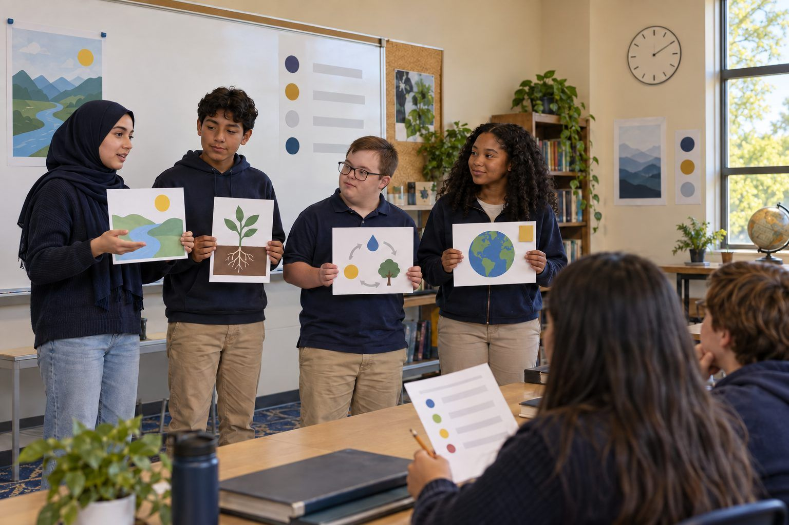

Student learning · Grades 6–8, Grades 9–12 · 55 minutes
Presentation Makeover
Teams rescue a cluttered slide deck, making it clear, accessible, honestly sourced, and upfront about AI images, then pitch the revised version in 60 seconds.
Most students have sat through a slide deck with tiny yellow text, a paragraph per slide, a mystery statistic, and a photo pulled from somewhere. In this activity, teams get a printed "before" deck made by fictional students and give it a full makeover: one idea per slide, readable fonts and contrast, alt text for images, credit for every image and fact, and a clear note on any AI-generated image. Then each team presents the revised version in 60 seconds. The point is that a presentation is communication, and honest, accessible design is part of communicating well.
In this packet
- Handout A: The "Before" Deck (reading)
- Handout B: Makeover Checklist (checklist)
- Handout C: 60-Second Pitch Rubric (rubric)
TCEA ELE indicators
- S3.2 I can communicate my ideas clearly to others.
- S1.1 I know how to use technology to support my learning.
- AI2.1 I know how to apply ethical principles when using or developing AI for education.
- S1.3 I am aware of how AI can assist me in my studies.
Full facilitator guide: mglearn.github.io/eles/activities/presentation-makeover.html
Handout A for Presentation Makeover
The "Before" Deck
This deck was made by fictional students at fictional Ridgeview Middle School. Read each slide description and mark every problem you find.
1Slide 1 (title): "Why Ridgeview Needs a School Garden!!!" in a curly script font, pale yellow text on a white background, with a busy photo of flowers behind the words. No names of who made the deck.
2Slide 2: Title "Reasons." Eleven bullet points in 12-point font, each a full sentence, for example: "Gardens are good because they let students learn about plants and also science and also they help the environment which is important for the future and our community." The last three bullets run off the bottom of the slide.
3Slide 3: A large photo of a beautiful garden next to a school, with perfect rows of vegetables and a rainbow in the sky. The photo was made with an AI image generator, but the slide doesn't say so. Big text over the image: "Gardens make students 50% happier!" Source at the bottom in tiny gray text: "the internet."
4Slide 4: A bar chart titled "Support." Two bars, one red and one green, with no labels, no numbers on the axis, and no legend. The only way to tell what the bars mean is a note in the speaker notes: "red = against, green = for."
5Slide 5: A photo of a famous chef in a garden, copied from a website. No credit line and no permission noted. Caption: "Even famous people love gardens." The photo has no alt text.
6Slide 6: Title "The End." Clip art of a smiling carrot. No sources slide, no summary of what the team wants the audience to do, and no contact information for the garden club.
7Bonus problem to find: Every slide uses a different font and a different background color, and the slides are numbered out of order, so the deck jumps from Slide 2 to Slide 4 to Slide 3 when presented.
Handout B for Presentation Makeover
Makeover Checklist
Use this twice: once to audit the "before" deck, and again as a final check on your revised deck before you present.
| Yes | Partly | No | |
|---|---|---|---|
| Clarity: each slide has one main idea that a viewer could name in five seconds. | |||
| Clarity: slides use short phrases, and extra details live in speaker notes. | |||
| Access: text is large enough to read from the back of the room (a good rule is no smaller than about 24-point). | |||
| Access: text and background have strong contrast (dark on light or light on dark), and no text sits on a busy image. | |||
| Access: fonts are simple and consistent across the deck. | |||
| Access: meaning never depends on color alone; charts have labels, a legend, and numbered axes. | |||
| Access: every meaningful image has alt text that describes what matters for the message. | |||
| Honesty: every factual claim or statistic is traced to a source we can name, or it has been changed or cut. | |||
| Honesty: every image has a credit line (creator and source or license), or we made it ourselves and say so. | |||
| AI: every AI-generated image has a visible label, such as "Image created with an AI tool." | |||
| AI: we checked AI-generated images for anything misleading, such as details that make the idea look more real or certain than it is. | |||
| Structure: the deck has a title slide with our names, slides in a logical order, a clear ask or takeaway, and a Sources slide. |
Notes
Handout C for Presentation Makeover
60-Second Pitch Rubric
Listener teams score the pitch and write one glow and one grow on the back.
| Criterion | Beginning | Developing | Proficient | Exemplary |
|---|---|---|---|---|
| Clear message | The main point is hard to find. | The main point is stated but slides compete with it. | The main point is clear and each slide supports it. | The main point is clear in the first 10 seconds and every slide builds toward a specific takeaway or ask. |
| Accessible design | Text is hard to read; images lack alt text. | Some slides are readable; some alt text is missing or vague. | Text is readable with strong contrast; all images have alt text. | Design works for every viewer, including color-independent charts, and the team can explain its choices. |
| Honest sourcing and credit | Facts and images are uncredited. | Some credits are present; the unsourced statistic remains. | Every fact and image is credited; the unsourced statistic was fixed or cut. | Credits are complete and consistent, and the team explains how it checked its evidence. |
| AI disclosure | AI-generated images are not disclosed. | A disclosure appears but is hard to see or unclear. | Every AI-generated image has a clear, visible label. | Labels are clear, and the team explains why an AI image fit (or didn't fit) the message. |
| Delivery in 60 seconds | The pitch runs well over time or reads slides word for word. | The pitch fits the time but mostly reads the slides. | The pitch fits the time and speaks to the audience, not the screen. | The pitch is confident, on time, and names a design choice made for the audience. |